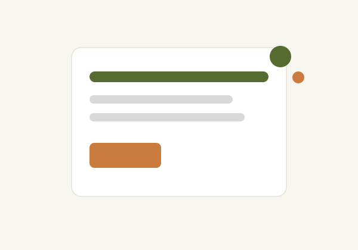

1
Submit Complaint
Fill out the issue report form with the required details and optional image.
Issues Reporting Outlet (IRO) provides a simple platform for AAUA students and host community members to report challenges, monitor progress and encourage faster response from relevant authorities.

Issue Reporting
Web Accessible
Complaint Tracking
Status Updates
The reporting process is straightforward and allows users to submit complaints, monitor progress and receive updates.
Fill out the issue report form with the required details and optional image.
The report is reviewed before being forwarded to the appropriate authority.
Use the generated complaint ID to monitor the status of your report.
Many community-related issues remain unresolved because there is no centralized reporting mechanism connecting students, community members and authorities.
Improve communication between AAUA, the host communities and relevant authorities through a unified reporting platform.
Contact the IRO support desk for enquiries.